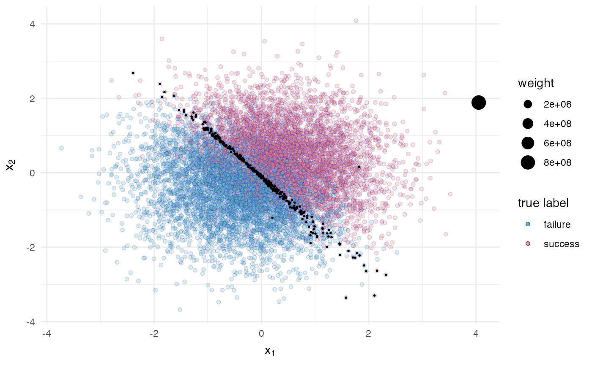
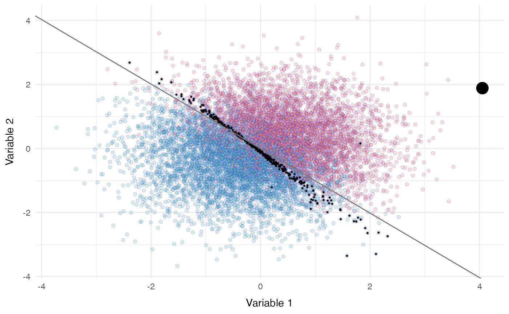

vanilla-bayesian-coresets.RmdThis package implements Bayesian coresets for binary logistic regression data. The types of coresets that are currently supported are the uniform coresets and the Hilbert Frank–Wolfe coresets.
Through vanillabayescoresets’ functions you will be able to:
This document guides you through the functionalities of this package.
Let’s get started by loading the package:
library(vanillabayescoresets)Fitting Bayesian models on large datasets using standard methods such as Markov Chain Monte Carlo can be computationally very expensive and sometimes infeasible. Several modifications of MCMC, as well as alternative methods like Variational Inference, have emerged to scale inference on the full dataset. Bayesian coresets are a different approach that achieves scalability by focusing on a pre-processing step, aimed at delivering a small, weighted subsample of the full data on which to run any inference algorithm.
In order to apply the methods of finding coresets described by
Huggins et al. and Campbell et al., we will first need some binary data.
You can use your own binary dataset with the get_coreset_uniform() and get_coreset_frankwolfe()
methods described below, or you can use our function,
simulate_logit_data() to easily simulate binary data that
you can use to experiment. The easiest way to use the
simulate_logit_data() function is to simply use the default
parameter settings and save the results to a list.
data <- simulate_logit_data()
names(data)
#> [1] "y" "x" "theta"As you can see above, the function returned a list with three
elements. y is a vector of the binary reponses, where \(y_i \in \{-1, 1\}\), x is the
feature matrix, and theta is the vector of coefficients.
Let’s take a look at some basic properties of these objects.
length(data$y)
#> [1] 10000
dim(data$x)[1]
#> [1] 10000
dim(data$x)[2]
#> [1] 3
length(data$theta)
#> [1] 3
head(data$y)
#> [1] 1 -1 1 1 -1 -1Without further specification, simulate_logit_data
returned a \(10000 \times 1\) vector
for y, and a \(10000 \times
3\) matrix for x. The data are simulated using the
standard logistic regression model, i.e.
\[
\ln \left(\dfrac{p_i}{1-p_i}\right) = X\theta
\] with \(p_i = Pr(y_i = 1)\),
\(Y_{nx1} = \{y_i, i = 1, ..., n\}\),
\(X_{nxd}\), and \(\theta_{dx1}\). In accordance with the
model specified in Campbell et al., the default value for
theta is \(\theta = (3, 3,
0)\). We can choose to further customize these specifications if
we wish.
Most custom specifications can be included in the params
input parameter. For example, if you want to choose the number of
independent observations, \(n\), you
can do
data <- simulate_logit_data(params = list(n = 5000))
length(data$y)
#> [1] 5000
dim(data$x)[1]
#> [1] 5000which sets \(n = 5000\).
We can also change the number of covariates by specifying a new vector of parameters for \(\theta\)
data <- simulate_logit_data(params = list(n = 5000, theta = c(1, 2, 3, 4)))
length(data$theta)
#> [1] 4
dim(data$x)[2]
#> [1] 4which sets \(\theta = (1, 2, 3, 4)\).
By default, simulate_logit_data has been sampling our
x values from a multivariate normal distribution with the
identity matrix as the covariance. To see this, let’s take a look at the
first few rows of x.
head(data$x)
#> [,1] [,2] [,3] [,4]
#> [1,] 0.66804984 -0.5219684 -0.45144751 1
#> [2,] 1.20083656 0.1510313 -0.22766468 1
#> [3,] -0.07516643 0.5121869 -0.03016629 1
#> [4,] -0.75516341 -0.5208359 -0.10085437 1
#> [5,] 0.92879962 -1.6494213 -0.60540429 1
#> [6,] 1.44734671 2.5237129 0.29886432 1We can further customize this generative model for
x.
If you want to get closer to real-world data, you may want to specify a covariance matrix with nonzero covariances. You can do this with
dependent_sigma <- matrix(c(1, 0.1, 0.2, 1), byrow = TRUE, ncol = 2, nrow = 2)
dependent_sigma
#> [,1] [,2]
#> [1,] 1.0 0.1
#> [2,] 0.2 1.0
data <- simulate_logit_data(params = list(sigma = dependent_sigma))Instead of generating values from a normal distribution, we can also
generate binary values for x by specifying
model = "bernoulli", e.g.
data <- simulate_logit_data(model = "bernoulli")
head(data$x)
#> [,1] [,2] [,3]
#> [1,] 1 0 1
#> [2,] 1 1 1
#> [3,] 0 1 1
#> [4,] 1 1 1
#> [5,] 1 0 1
#> [6,] 1 1 1We can further customize our Bernoulli model by specifying the
probability parameters for each column of x. This can be
done by
data <- simulate_logit_data(model = "bernoulli", params = list(px = c(0.2, 1)))
head(data$x)
#> [,1] [,2] [,3]
#> [1,] 0 1 1
#> [2,] 0 1 1
#> [3,] 0 1 1
#> [4,] 1 1 1
#> [5,] 0 1 1
#> [6,] 0 1 1where the last column is the intercept column. You can choose not to
include the intercept by setting intercept = FALSE.
data <- simulate_logit_data(model = "bernoulli",
params = list(theta = c(3, 3),
px = c(0.2, 1),
intercept = FALSE))
head(data$x)
#> [,1] [,2]
#> [1,] 1 1
#> [2,] 0 1
#> [3,] 0 1
#> [4,] 0 1
#> [5,] 0 1
#> [6,] 0 1Now that we have some binary data to work with, we can start looking at methods of getting coresets.
The function get_coreset_uniform()
implements the uniform coresets for binary logistic data, as detailed in
Algorithm 1 of J. Huggins et
al. (2016). The only inputs that are required are:
x: a feature matrixy: a binary response vectorwhich can be from your own dataset or generated using simulate_logit_data(). For example,
the code below will generate a coreset using the uniform coreset method
with all the default specifications.
data <- simulate_logit_data()
coreset <- get_coreset_uniform(data$x, data$y)
length(coreset$datapoints_selected)
#> [1] 692By default, the maximum number of observations that will be selected
for the coreset is \(\lfloor\dfrac{n}{10}\rfloor\). This can be
specified through the m input parameter as shown below.
coreset <- get_coreset_uniform(data$x, data$y, m = 500)
length(coreset$datapoints_selected)
#> [1] 412In order to estimate each data point’s sensitivity, the function needs to first compute a kmeans clustering of the data. The default number of clusters is 4 (which is the number of clusters used in J. Huggins et al.) for datasets with \(n \leq 10,000\) and \(\lfloor\dfrac{n}{2500}\rfloor\) for datasets with \(n > 10,000\), but this parameter can be directly specified in the function as well.
coreset <- get_coreset_uniform(data$x, data$y, num_clusters = 5)You can also specify a search radius r for the parameter
space which is set to 4 by default per the discussion in J. Huggins et al. (2016).
Lastly, because calculating coresets is not a deterministic procedure,
you can choose to set a seed so that the results of
get_coreset_uniform() are reproducible given the same input
parameters, and set verbose = TRUE to see status messages
printed to the console.
The function get_coreset_frankwolfe() implements the
Hilbert Frank-Wolfe coresets for binary logistic data, as detailed in
Algorithms 2 and 3 and Sections 4.2 and 5 of T. Campbell and T. Broderick
(2019).
The required inputs of this function are the same as those of get_coreset_uniform(): a matrix
x of covariates and a vector y of binary
observations in \(\{-1, 1\}\):
data <- simulate_logit_data()
dplyr::glimpse(data$x)
#> num [1:10000, 1:3] 2.3253 -0.0395 1.7416 -0.558 -1.4288 ...
dplyr::glimpse(data$y)
#> num [1:10000] 1 1 1 -1 1 1 -1 -1 1 -1 ...
coreset <- get_coreset_frankwolfe(x = data$x, y = data$y)
#> Sample Size: 10000
#> Laplace Approximation begins...
#> Iteration: 10 of 100 , LP: -2785.1
#> Iteration: 20 of 100 , LP: -2785.1
#> Estimating the Covariance Matrix
#> Sampling from Posterior with Sampling Importance Resampling
#> Creating Summary from Point-Estimates
#> Creating Summary from Posterior Samples
#> Estimating Log of the Marginal Likelihood
#> Laplace Approximation is finished.The last call is equivalent to:
coreset <- get_coreset_frankwolfe(x = data$x,
y = data$y,
m = as.integer(length(data$y) / 10),
num_projections = 500,
seed = 1234,
verbose = FALSE)
#> Sample Size: 10000
#> Laplace Approximation begins...
#> Iteration: 10 of 100 , LP: -2785.1
#> Iteration: 20 of 100 , LP: -2785.1
#> Estimating the Covariance Matrix
#> Sampling from Posterior with Sampling Importance Resampling
#> Creating Summary from Point-Estimates
#> Creating Summary from Posterior Samples
#> Estimating Log of the Marginal Likelihood
#> Laplace Approximation is finished.From there, we can see what the optional parameters are and their
default values. As in get_coreset_uniform(),
m controls the (maximum) number of data points included in
the coreset, and defaults to roughly one tenth of the original data
points.
The parameter num_projections is specific to the Hilbert
Frank-Wolfe method: this method requires the norm of the likelihood
gradient, whose computation is intractable, and so an approximate norm
is computed using a finite-dimensional projection of the likelihood
obtained by evaluating the likelihood at a number
num_projections of parameters sampled from an approximate
posterior distribution obtained through a Laplace Approximation. The
default num_projections is set to 500, as in the reference
paper.
Lastly, the parameter seed allows you to set a seed for
reproducibility of results and the parameter verbose
regulates whether messages are printed throughout the execution of the
function that inform the user on the step of the algorithm that is being
implemented (only messages printed by LaplaceApproximation()
will be shown).
Note: the prior on model parameters that is currently supported is a multivariate standard normal; the only step at which the prior is considered is for the computation of the Laplace Approximation of the posterior.
Once a coreset has been obtained, how to better appreciate the result
than with some plotting?
In the current version of this package, we provide a function for
plotting the datapoints against two continuous
covariates, labeling them as either failures (i.e. y = -1) or successes
(i.e. y = 1), marking the data points selected in the coreset and
representing their weight as the point’s size.
The first argument required by the function
visualize_coreset() is an object in which the output of
either the get_coreset_uniform() or the get_coreset_frankwolfe()
function has been stored. The other two required arguments are the
matrix x of covariates and the vector y of
binary observations in \(\{-1, 1\}\).
We may have to specify where the intercept column is located in matrix
of covariates (default is the third column).
# Plotting uniform coresets
coreset_uniform <- get_coreset_uniform(data$x, data$y, num_clusters = 5)
visualize_coresets(coreset_uniform, data$x, data$y, intercept_col = 3)
# Plotting Hilbert Frank-Wolfe coresets
coreset_frankwolfe <- get_coreset_frankwolfe(data$x, data$y)
#> Sample Size: 10000
#> Laplace Approximation begins...
#> Iteration: 10 of 100 , LP: -2785.1
#> Iteration: 20 of 100 , LP: -2785.1
#> Estimating the Covariance Matrix
#> Sampling from Posterior with Sampling Importance Resampling
#> Creating Summary from Point-Estimates
#> Creating Summary from Posterior Samples
#> Estimating Log of the Marginal Likelihood
#> Laplace Approximation is finished.
visualize_coresets(coreset_frankwolfe, data$x, data$y, intercept_col = 3)
We can customize our plot by suppressing the legend for either the
coreset point’s weight or the full-data point’s true label (or both), by
changing the axis’ labels, or by overlaying an equation line. In the
latter case, we provide as argument a vector whose first and second
elements are, respectively, the intercept and the slope of the equation
line obtained through calling glm():
# Making optional changes
y_glm <- (data$y + 1) /2 # recode for glm call
glm_estimates <- glm(y_glm ~ data$x[, 1] + data$x[, 2], family = "binomial")
coeffs <- glm_estimates$coefficients
intercept <- - coeffs[1] / coeffs[3]
slope <- - coeffs[2] / coeffs[3]
visualize_coresets(coreset_frankwolfe,
data$x,
data$y,
legend_true_label = FALSE,
legend_weights = FALSE,
name_variables = c("Variable 1", "Variable 2"),
equation_line = c(intercept, slope))
#> Warning: `guides(<scale> = FALSE)` is deprecated. Please use `guides(<scale> = "none")` instead.
#> `guides(<scale> = FALSE)` is deprecated. Please use `guides(<scale> = "none")` instead.
Now, please enjoy experimenting with Bayesian coresets!
The functions implemented in vanillabayescoresets (in R) are simplified versions of some of the functions implemented in Python by the packages lrcoresets and bayesian-coresets, created by Jonathan H. Huggins and Trevor Campbell.
To dive deeper into the development, the derivations, the theoretical results and the advancements on Bayesian coresets, here is a list of publications:
And to start gaining familiarity and intuitions on this framework, here is a collection of some great tutorials: